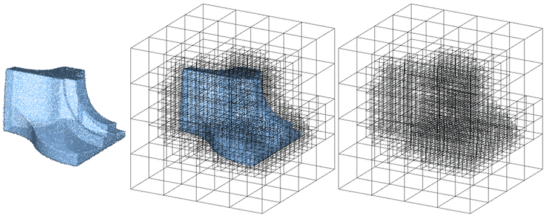
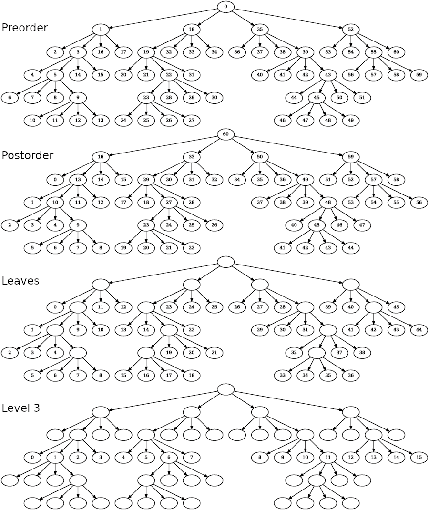
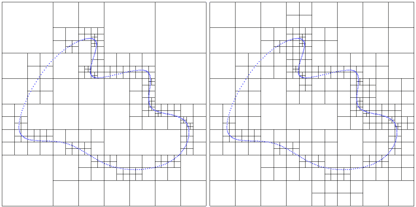
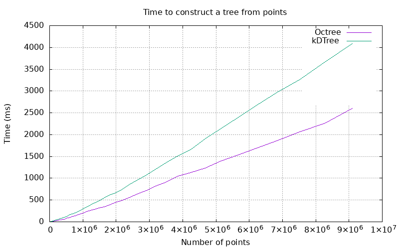
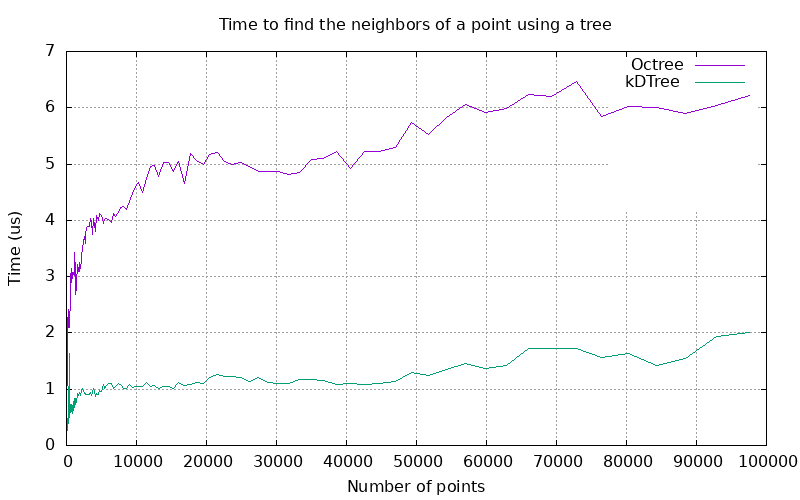
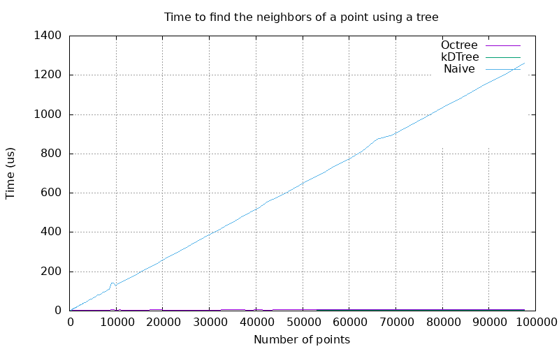

|
CGAL 6.0 - Quadtrees, Octrees, and Orthtrees
|
Loading...
Searching...
No Matches
|
CGAL 6.0 - Quadtrees, Octrees, and Orthtrees
|
Quadtrees are tree data structures in which each node encloses a square section of space, and each internal node has exactly 4 children. Octrees are a similar data structure in 3D in which each node encloses a cubic section of space, and each internal node has exactly 8 children.
We call the generalization of such data structure "orthtrees", as orthants are generalizations of quadrants and octants. The term "hyperoctree" can also be found in literature to name such data structures in dimensions 4 and higher.
This package provides a general data structure Orthtree along with aliases for Quadtree and Octree. These trees can be constructed with custom contents and split predicates, and iterated on with various traversal methods.

Figure 95.1 Building an orthtree in 3D (octree) from a point cloud.
A common purpose for an orthtree is to subdivide a collection of points, and the Orthtree package provides a traits class for this purpose. The points are not copied: the provided point range is used directly and rearranged by the orthtree. Altering the point range after creating the orthtree may leave the tree in an invalid state. The constructor returns a tree with a single (root) node that contains all the points.
The method refine() must be called to subdivide space further. This method uses a split predicate which takes a node as input and returns true if this node should be split, false otherwise: this enables users to choose on what criterion should the orthtree be refined. Predefined predicates are provided for the point-set orthtree, including Maximum_depth and Maximum_number_of_inliers.
The simplest way to create a point-set orthtree is from a vector of points. The constructor generally expects a separate point range and map, but the point map defaults to Identity_property_map if none is provided.
The split predicate is a user-defined functor that determines whether a node needs to be split. Custom predicates can easily be defined if the existing ones do not match users' needs.
The following example shows the construction of an Octree from a vector of points. octree.refine(10, 1) uses the default split predicate, which enforces a max-depth and a maximum number of inliers per node ("bucket size"). Nodes are split if their depth is less than 10, and they contain more than one inlier.
File Orthtree/octree_build_from_point_vector.cpp
The Orthtree class may be templated with Orthtree_traits_point<> with a 2d dimension tag and thus behave as a quadtree. For convenience, the alias Quadtree is provided.
The following example shows the construction of quadtree from a vector of Point_2 objects. quadtree.refine(10, 5) uses the default split predicate, which enforces a max-depth and a maximum number of inliers per node ("bucket size"). Nodes are split if their depth is less than 10, and they contain more than 5 inliers.
File Orthtree/quadtree_build_from_point_vector.cpp
Orthtree_traits_point<> can also be templated with a 3d dimension tag and thus behave as an octree. For convenience, the alias Octree is provided.
The following example shows how to create an octree from a vector of Point_3 objects. As with the quadtree example, we use the default split predicate. In this case the max depth is 10, and the bucket size is 1.
File Orthtree/octree_build_from_point_vector.cpp
Some data structures such as Point_set_3 require a non-default point map type and object. This example illustrates how to create an octree from a Point_set_3 loaded from a file. It also shows a more explicit way of setting the split predicate when refining the tree.
An octree is constructed from the point set and its corresponding map, and then written to the standard output.
The split predicate is manually constructed and passed to the refine method. In this case, we use a maximum number of inliers with no corresponding max depth, this means that nodes will continue to be split until none contain more than 10 points.
File Orthtree/octree_build_from_point_set.cpp
The following example illustrates how to refine an octree using a split predicate that isn't provided by default. This particular predicate sets a node's bucket size as a ratio of its depth. For example, for a ratio of 2, a node at depth 2 can hold 4 points, a node at depth 7 can hold 14.
File Orthtree/octree_build_with_custom_split.cpp
An orthtree can also be used with an arbitrary number of dimensions. The Orthtree_traits_point template can infer the arbitrary dimension count from the d-dimensional kernel.
The following example shows how to build a generalized orthtree in dimension 4. As std::vector<Point_d> is manually filled with 4-dimensional points. The vector is used as the point set, and an Identity_property_map is automatically set as the orthtree's map type, so a map does not need to be provided.
File Orthtree/orthtree_build.cpp
Traversal is the act of navigating among the nodes of the tree. The Orthtree class provides a number of different solutions for traversing the tree.
Because our orthtree is a form of connected acyclic undirected graph, it is possible to navigate between any two nodes. What that means in practice is that given a node on the tree, it is possible to access any other node using the right set of operations. The Node_index type provides a handle on a node, and the orthree class provides methods that enable the user to retrieve the indices of each of its children as well as its parent (if they exist).
Given any node index node, the nth child of that node can be found with orthtree.child(node, n). For an octree, values of n from 0-7 provide access to the different children. For non-root nodes, it is possible to access parent nodes using the orthtree.parent() accessor.
To access grandchildren, it isn't necessary to use nested orthtree.child() calls. Instead, the orthtree.descendant(node, a, b, ...) convenience method is provided. This retrieves the bth child of the ath child, to any depth.
In most cases, we want to find the descendants of the root node. For this case, there is another convenience method orthtree.node(a, b, c, ...). This retrieves the node specified by the descent a, b, c. It is equivalent to orthtree.descendant(orthtree.root(), a, b, c, ...).
The following example demonstrates the use of several of these accessors.
File Orthtree/octree_traversal_manual.cpp
It is often useful to be able to iterate over the nodes of the tree in a particular order. For example, the stream operator << uses a traversal to print out each node. A few traversals are provided, among them Preorder_traversal and Postorder_traversal. To traverse a tree in preorder is to visit each parent immediately followed by its children, whereas in postorder, traversal the children are visited first.
The following example illustrates how to use the provided traversals.
A tree is constructed, and a traversal is used to create a range that can be iterated over using a for-each loop. The default output operator for the orthtree uses the preorder traversal to do a pretty-print of the tree structure. In this case, we print out the nodes of the tree without indentation instead.
File Orthtree/octree_traversal_preorder.cpp
Users can define their own traversal methods by creating models of the OrthtreeTraversal concept. The custom traversal must provide a method which returns the starting point of the traversal (first_index()) and another method which returns the next node in the sequence (next_index()). next_index() returns an empty optional when the end of the traversal is reached. The following example shows how to define a custom traversal that only traverses the first branch of the octree:
File Orthtree/octree_traversal_custom.cpp
Figure Figure 95.2 shows in which order nodes are visited depending on the traversal method used.

Figure 95.2 Quadtree visualized as a graph. Each node is labelled according to the order in which it is visited by the traversal. When using leaves and level traversals, the quadtree is only partially traversed.
Once an orthtree is built, its structure can be used to accelerate different tasks.
The naive way of finding the nearest neighbor of a point requires finding the distance to every other point. An orthtree can be used to perform the same task in significantly less time. For large numbers of points, this can be a large enough difference to outweigh the time spent building the tree.
Note that a kd-tree is expected to outperform the orthtree for this task, it should be preferred unless features specific to the orthtree are needed.
The following example illustrates how to use an octree to accelerate the search for points close to a location.
Points are loaded from a file and an octree is built. The nearest neighbor method is invoked for several input points. A k value of 1 is used to find the single closest point. Results are put in a vector, and then printed.
File Orthtree/octree_find_nearest_neighbor.cpp
Not all octrees are compatible with nearest neighbor functionality, as the idea of a nearest neighbor may not make sense for some tree contents. For the nearest neighbor functions to work, the traits class must implement the CollectionPartitioningOrthtreeTraits concept.
An orthtree is considered "graded" if the difference of depth between two adjacent leaves is at most 1 for every pair of leaves.

Figure 95.3 Quadtree before and after being graded.
The following example demonstrates how to use the grade method to eliminate large jumps in depth within the orthtree.
A tree is created such that one node is split many more times than those it borders. grade() splits the octree's nodes so that adjacent nodes never have a difference in depth greater than one. The tree is printed before and after grading, so that the differences are visible.
File Orthtree/octree_grade.cpp
Tree construction benchmarks were conducted by randomly generating a collection of points, and then timing the process of creating a fully refined tree which contains them.
Because of its simplicity, an octree can be constructed faster than a kd-tree.

Figure 95.4 Plot of the time to construct a tree.
Orthtree nodes are uniform, so orthtrees will tend to have deeper hierarchies than equivalent kd-trees. As a result, orthtrees will generally perform worse for nearest neighbor searches. Both nearest neighbor algorithms have a theoretical complexity of \(O(log(n))\), but the orthtree can generally be expected to have a higher coefficient.

Figure 95.5 Plot of the time to find the 10 nearest neighbors of a random point using a pre-constructed tree.
The performance difference between the two trees is large, but both algorithms compare very favorably to the linear complexity of the naive approach, which involves comparing every point to the search point.
Using the orthtree for nearest neighbor computations instead of the kd-tree can be justified either when few queries are needed (as the construction is faster) or when the orthtree is also needed for other purposes.

Figure 95.6 Plot of the time to find nearest neighbors using tree methods and a naive approach.
For nontrivial point counts, the naive approach's calculation time dwarfs that of either the orthtree or kd-tree.
A prototype code was implemented by Pierre Alliez and improved by Tong Zhao and Cédric Portaneri. From this prototype code, the package was developed by Jackson Campolatarro as part of the Google Summer of Code